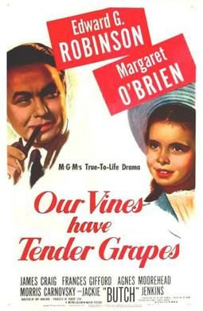

Our Vines Have Tender Grapes
Starring: Edward G. Robinson, Margaret O'Brien
Director: Roy Rowland
Writer: Dalton Trumbo
Our Vines Have Tender Grapes is a 1945 American drama film directed by Roy Rowland and starring Edward G. Robinson and Margaret O'Brien. It is about a Norwegian-American farming community in Wisconsin during World War II.
Trivia
- The film is based on the 1940 novel of the same name by George Victor Martin about the Norwegian-American residents of New Hope, Wisconsin, a small farming community inspired by the real town of Benson Corners in Portage County.
- The screenplay was written by Dalton Trumbo, and it was his last before being blacklisted for refusing to testify before the House Un-American Activities Committee; Margaret O'Brien later said the film was largely ignored for decades because of Trumbo's political troubles.
- Told from the viewpoint of little Selma (O’Brien), the film explores grand childhood adventures: making friends, a pet calf, Christmas, a terrifying trip down a flood-swollen river, a barn fire, and a ride on a circus elephant’s trunk.
Previous Showings
5 Runs • 3 Festivals
Original Billings: 1 run (November 1, 1945)
Original Run: November 1, 1945 (Thursday - Saturday)
All runs on record (5):
- November 1, 1945 (Thursday - Saturday)Edward G. Robinson, Margaret O'Brien
- April 9 - 11, 1991w/ Lost Angel
- December 26 - 31, 1998Romantic Comedy Seriesw/ Meet Me in St. Louis
- February 28 - March 2, 2009Winter 2009w/ Scarlet Street
- November 22 - 23, 2014November–December 2014, plus The Ten Commandmentsw/ Meet Me in St. Louis